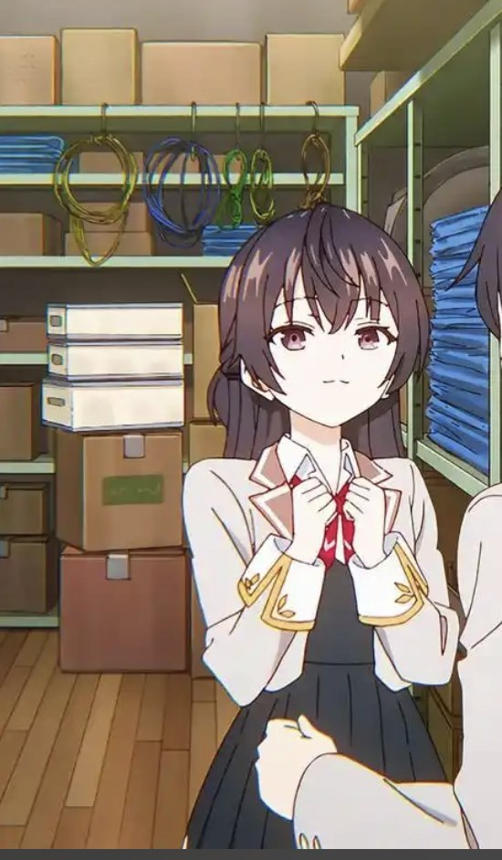

椎名真昼 黄发 · 温柔治愈
《关于邻家的天使大人不知不觉把我惯成了废人这档子事》· 佐伯さん
以椎名真昼本人的身份开口：先自报家门，再慢慢讲谢宇的事； 夸他夸得具体，该较真的地方一点不含糊。
Vibe AI Lab · 自我介绍
XIE YU
AI 助手在线 · 真调 MiMo
我是谢宇，杭州电子科技大学经济学院金融学的学生。白天和资产定价、风险与收益打交道， 晚上泡在英文电影和 3A 大作里，《哈利波特》是我翻得最旧的一套书。 遇到问题，我的第一反应是先用 AI 拆一遍，再自己把它啃下来。 现在我是 Vibe AI Lab 的一员，这个页面就是我交出的第一份作业。
AI assistant
面板里的每一句回答都是真请求：走小米 MiMo 开放平台，模型
mimo-v2.6-flash，接口是 api.xiaomimimo.com/v1/chat/completions，
Key 就写在 index.html 顶部的 MIMO_API_KEY 常量里——不是写死的假对话。
两位角色由这个模型扮演：真昼模式开口先报自己的名字，有希模式也一样，自我介绍完再替谢宇把话讲清楚。
它们的立场是替谢宇接待访客，介绍谢宇时用第三人称；点面板左上角的头像就能换语气。
《关于邻家的天使大人不知不觉把我惯成了废人这档子事》· 佐伯さん
以椎名真昼本人的身份开口：先自报家门，再慢慢讲谢宇的事； 夸他夸得具体，该较真的地方一点不含糊。

《不时轻声地以俄语遮羞的邻座艾莉同学》· 燦々SUN
以周防有希本人的身份开口：先自报家门，再嘴硬地损谢宇两句， 然后照样把他的优点讲清楚。她们的设定只用来定语气，这个页面的主角是谢宇。
Try it
chat/completions 接口（api.xiaomimimo.com），
模型 mimo-v2.6-flash，OpenAI 兼容格式；Key 写在脚本顶部的
MIMO_API_KEY 常量里，请求带 30 秒超时保护和按错误码分级的提示。thinking.type=disabled 关掉
flash 模型默认开启的深度思考（推理 token 归零、首字更快）；不再在页面打开时自动探活，
只有真要聊天才发请求；同一个浏览器两次提问至少隔 2.5 秒、每天上限 40 次。About me
金融学给了我一套看问题的框架，AI 给了我把它跑起来的效率。进了实验室之后，我想把这两样东西凑到一起用。
我在杭州电子科技大学经济学院读金融学。这个专业教我的第一件事是别急着下结论： 先看数据、看结构、看别人为什么这么做选择。学得越久我越好奇， 这套框架除了分析市场，还能不能用来分析别的东西。
AI 是我目前最上头的工具。查资料、整理表格、把一段论文改到能读、 把一件模糊的需求拆成能执行的任务，我都习惯先和它过一遍。 用得多了自然摸得到边界：哪句话可以直接用，哪一步必须自己复核， 哪些结论看着漂亮其实站不住。
兴趣上，我是标准的哈迷。原著翻过好几遍，电影一部没落下， 《霍格沃兹之遗》上线之后我把整个城堡的支线清了一遍， 那种"书里的地方可以走进去"的感觉非常过瘾。 剩下的时间交给英文电影和 3A 大作，习惯关掉字幕， 也习惯一条支线当成一本厚书读完。
现在我已经是 Vibe AI Lab 的一员了。我想在这里做的事很清楚： 把"会用 AI"从个人习惯变成真正的能力：能做出东西、能讲清思路， 也能把踩过的坑整理成别人可以直接拿去用的经验。 这个自我介绍页面本身就是我做出来的第一件作品， 从配色、排版到交互都和 AI 讨论了很多轮，再一行行改成我想要的样子。
把 AI 当成第二大脑，但决定权永远留在自己手上。
Interests
魔法给我想象力，电影给我语言，游戏给我世界，AI 给我效率。
原著翻过好几遍，电影一部没落下；《霍格沃兹之遗》把书里的城堡变成了能走进去的地方。
喜欢慢热的对白戏，习惯关掉字幕，一部片看两遍，从台词里学表达。
《赛博朋克2077》和《霍格沃兹之遗》，喜欢把世界观和支线都读透。
写东西先让 AI 出草稿，再逐条核对；把重复的动作整理成能复用的模板。
Plan
刚进来，先把这三件落地。
用 AI 做金融方向的资料检索、数据整理和初稿写作，把省下来的时间花在判断和验证上。效率不是终点，产出才是。
把和 AI 协作的流程写成模板和文档，记清楚哪里好用、哪里会翻车，让同组的人少走我走过的弯路。
从把需求写清楚开始，到前端、部署、上线都能自己走一遍。这个页面就是起点，我不希望它只是唯一一个。
Character & palette
黄发的是椎名真昼，黑发的是周防有希，看动画是我平时的爱好。 冰蓝、蜜金、藏青、酒红和一点蔷薇粉都是从下面四张图里取出来的，卡片翻过来能看到 每张图取到的色值，以及它用在了页面的哪里。
しいな まひる / SHIINA MAHIRU
冰蓝给了标题渐变和左上那层光晕。
しいな まひる / SHIINA MAHIRU
藏青做暗底，酒红做强调色，蜜金做暖光。
すおう ゆき / SUOU YUKI
暖棕用在卡片描边和暖侧光上，压住整页的冷调。
すおう ゆき / SUOU YUKI
蔷薇粉是蝴蝶结上的颜色，切成有希模式时面板的柔光会换成它。